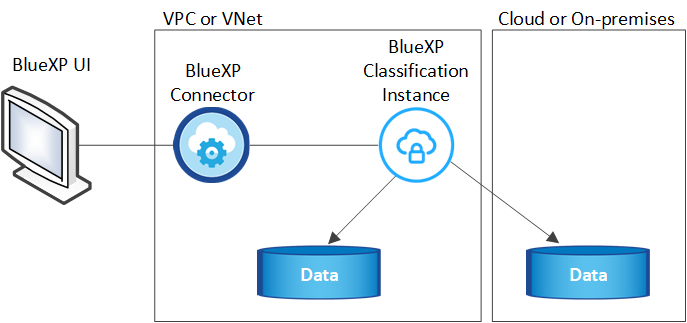

Release notes
Release notes
Learn about BlueXP classification
 Suggest changes
Suggest changes
BlueXP classification is a data governance service for BlueXP that scans your corporate on-premises and cloud data sources to map and classify data, and to identify private information. This can help reduce your security and compliance risk, decrease storage costs, and assist with your data migration projects.
Features
BlueXP classification uses artificial intelligence (AI), natural language processing (NLP), and machine learning (ML) to understand the content that it scans in order to extract entities and categorize the content accordingly. This allows BlueXP classification to provide the following areas of functionality.
Maintain compliance
BlueXP classification provides several tools that can help with your compliance efforts. You can use BlueXP classification to:
-
Identify Personal Identifiable Information (PII).
-
Identify a wide scope of sensitive personal information as required by GDPR, CCPA, PCI, and HIPAA privacy regulations.
-
Respond to Data Subject Access Requests (DSAR) based on name or email address.
-
Identify whether unique identifiers from your databases are found in files in other repositories - basically making your own list of "personal data" that is identified in BlueXP classification scans.
-
Notify certain users through email when files contain certain PII (you define this criteria using Policies) so you can decide on an action plan.
Strengthen security
BlueXP classification can identify data that is potentially at risk for being accessed for criminal purposes. You can use BlueXP classification to:
-
Identify all the files and directories (shares and folders) with open permissions that are exposed to your entire organization or to the public.
-
Identify sensitive data that resides outside of the initial, dedicated location.
-
Comply with data retention policies.
-
Use Policies to automatically notify security staff of new security issues so they can take action immediately.
-
Add custom tags to files (for example, "needs to be moved") and assign a BlueXP user so that person can own updates to the files.
-
View and modify Azure Information Protection (AIP) labels in your files.
Optimize storage usage
BlueXP classification provides tools that can help with your storage total cost of ownership (TCO). You can use BlueXP classification to:
-
Increase storage efficiency by identifying duplicate or non-business-related data. You can use this information to decide whether you want to move or delete certain files.
-
Delete files that seem insecure or too risky to leave in your storage system, or that you have identified as duplicate. You can use Policies to automatically delete files that match certain criteria.
-
Save storage costs by identifying inactive data that you can tier to less expensive object storage. Learn more about tiering from Cloud Volumes ONTAP systems. Learn more about tiering from on-premises ONTAP systems.
Accelerate data migration
BlueXP classification can be used to scan your on-premises data before migrating it to the public or private cloud. You can use BlueXP classification to:
-
View the size of data and whether any of the data contains sensitive information prior to moving it.
-
Filter the source data (based on over 25 types of criteria) so you can move only the required files to the destination - unnecessary data is not moved.
-
Automatically and continually move, copy, or sync only the required data into the cloud repository.
Supported data sources
BlueXP classification can scan and analyze structured and unstructured data from the following types of data sources:
NetApp:
-
Cloud Volumes ONTAP (deployed in AWS, Azure, or GCP)
-
On-premises ONTAP clusters
-
StorageGRID
-
Azure NetApp Files
-
Amazon FSx for ONTAP
-
Cloud Volumes Service for Google Cloud
Non-NetApp:
-
Dell EMC Isilon
-
Pure Storage
-
Nutanix
-
Any other storage vendor
Cloud:
-
Amazon S3
-
Google Cloud Storage
-
OneDrive
-
SharePoint Online
-
SharePoint On-premises (SharePoint Server)
-
Google Drive
Databases:
-
Amazon Relational Database Service (Amazon RDS)
-
MongoDB
-
MySQL
-
Oracle
-
PostgreSQL
-
SAP HANA
-
SQL Server (MSSQL)
BlueXP classification supports NFS versions 3.x, 4.0, and 4.1, and CIFS versions 1.x, 2.0, 2.1, and 3.0.
Cost
-
The cost to use BlueXP classification depends on the amount of data that you're scanning. The first 1 TB of data that BlueXP classification scans in a BlueXP workspace is free for 30 days. This includes all data from all working environments and data sources. A subscription to the AWS, Azure, or GCP Marketplace, or a BYOL license from NetApp, is required to continue scanning data after that point. See pricing for details.
-
Installing BlueXP classification in the cloud requires deploying a cloud instance, which results in charges from the cloud provider where it is deployed. See the type of instance that is deployed for each cloud provider. There is no cost if you install BlueXP classification on an on-premises system.
-
BlueXP classification requires that you have deployed a BlueXP Connector. In many cases you already have a Connector because of other storage and services you are using in BlueXP. The Connector instance results in charges from the cloud provider where it is deployed. See the type of instance that is deployed for each cloud provider. There is no cost if you install the Connector on an on-premises system.
Data transfer costs
Data transfer costs depend on your setup. If the BlueXP classification instance and data source are in the same Availability Zone and region, then there are no data transfer costs. But if the data source, such as a Cloud Volumes ONTAP system or S3 Bucket, is in a different Availability Zone or region, then you'll be charged by your cloud provider for data transfer costs. See these links for more details:
The BlueXP classification instance
When you deploy BlueXP classification in the cloud, BlueXP deploys the instance in the same subnet as the Connector. Learn more about Connectors.

Note the following about the default instance:
-
In AWS, BlueXP classification runs on an m6i.4xlarge instance with a 500 GiB GP2 disk. The operating system image is Amazon Linux 2. When deployed in AWS, you can choose a smaller instance size if you are scanning a small amount of data.
-
In Azure, BlueXP classification runs on a Standard_D16s_v3 VM with a 500 GiB disk. The operating system image is CentOS 7.9.
-
In GCP, BlueXP classification runs on an n2-standard-16 VM with a 500 GiB Standard persistent disk. The operating system image is CentOS 7.9.
-
In regions where the default instance isn't available, BlueXP classification runs on an alternate instance. See the alternate instance types.
-
The instance is named CloudCompliance with a generated hash (UUID) concatenated to it. For example: CloudCompliance-16bb6564-38ad-4080-9a92-36f5fd2f71c7
-
Only one BlueXP classification instance is deployed per Connector.
You can also deploy BlueXP classification on a Linux host on your premises or on a host in your preferred cloud provider. The software functions exactly the same way regardless of which installation method you choose. Upgrades of BlueXP classification software is automated as long as the instance has internet access.

|
The instance should remain running at all times because BlueXP classification continuously scans the data. |
Using a smaller instance type
You can deploy BlueXP classification on a system with fewer CPUs and less RAM, but there are some limitations when using these less powerful systems.
| System size | Specs | Limitations |
|---|---|---|
Extra Large |
32 CPUs, 128 GB RAM, 1 TiB SSD |
Can scan up to 500 million files. |
Large (default) |
16 CPUs, 64 GB RAM, 500 GiB SSD |
Can scan up to 250 million files. |
Medium |
8 CPUs, 32 GB RAM, 200 GiB SSD |
Slower scanning, and can only scan up to 1 million files. |
Small |
8 CPUs, 16 GB RAM, 100 GiB SSD |
Same limitations as "Medium", plus the ability to identify data subject names inside files is disabled. |
When deploying BlueXP classification in the cloud on AWS you can choose a large/medium/small instance. When deploying BlueXP classification in Azure or GCP, email ng-contact-data-sense@netapp.com for assistance if you want to use one of these alternate systems. We'll need to work with you to deploy these other cloud configurations.
When deploying BlueXP classification on-premises, just use a Linux host with the alternate specifications. You do not need to contact NetApp for assistance.
How BlueXP classification works
At a high-level, BlueXP classification works like this:
-
You deploy an instance of BlueXP classification in BlueXP.
-
You enable high-level mapping or deep-level scanning on one or more data sources.
-
BlueXP classification scans the data using an AI learning process.
-
You use the provided dashboards and reporting tools to help in your compliance and governance efforts.
How scans work
After you enable BlueXP classification and select the repositories that you want to scan (these are the volumes, buckets, database schemas, or OneDrive or SharePoint user data), it immediately starts scanning the data to identify personal and sensitive data. You should focus on scanning live production data in most cases instead of backups, mirrors, or DR sites. Then BlueXP classification maps your organizational data, categorizes each file, and identifies and extracts entities and predefined patterns in the data. The result of the scan is an index of personal information, sensitive personal information, data categories, and file types.
BlueXP classification connects to the data like any other client by mounting NFS and CIFS volumes. NFS volumes are automatically accessed as read-only, while you need to provide Active Directory credentials to scan CIFS volumes.

After the initial scan, BlueXP classification continuously scans your data in a round-robin fashion to detect incremental changes (this is why it's important to keep the instance running).
You can enable and disable scans at the volume level, at the bucket level, at the database schema level, at the OneDrive user level, and at the SharePoint site level.
What's the difference between Mapping and Classification scans
BlueXP classification enables you to run a general "mapping" scan on selected data sources. Mapping provides only a high-level overview of your data, whereas Classification provides deep-level scanning of your data. Mapping can be done on your data sources very quickly because it does not access files to see the data inside.
Many users like this functionality because they want to quickly scan their data to identify the data sources that require more research - and then they can enable classification scans only on those required data sources or volumes.
The table below shows some of the differences:
| Feature | Classification | Mapping |
|---|---|---|
Scan speed |
Slow |
Fast |
List of file types and used capacity |
Yes |
Yes |
Number of files and used capacity |
Yes |
Yes |
Age and size of files |
Yes |
Yes |
Ability to run a Data Mapping Report |
Yes |
Yes |
Data Investigation page to view file details |
Yes |
No |
Search for names within files |
Yes |
No |
Create policies that provide custom search results |
Yes |
No |
Categorize data using AIP labels and Status tags |
Yes |
No |
Copy, delete, and move source files |
Yes |
No |
Ability to run other reports |
Yes |
No |
How quickly does BlueXP classification scan data
The scan speed is affected by network latency, disk latency, network bandwidth, environment size, and file distribution sizes.
-
When performing Mapping scans, BlueXP classification can scan between 100-150 TiBs of data per day, per scanner node.
-
When performing Classification scans, BlueXP classification can scan between 15-40 TiBs of data per day, per scanner node.
Information that BlueXP classification indexes
BlueXP classification collects, indexes, and assigns categories to your data (files). The data that BlueXP classification indexes includes the following:
- Standard metadata
-
BlueXP classification collects standard metadata about files: the file type, its size, creation and modification dates, and so on.
- Personal data
-
Personally identifiable information such as email addresses, identification numbers, or credit card numbers. Learn more about personal data.
- Sensitive personal data
-
Special types of sensitive information, such as health data, ethnic origin, or political opinions, as defined by GDPR and other privacy regulations. Learn more about sensitive personal data.
- Categories
-
BlueXP classification takes the data that it scanned and divides it into different types of categories. Categories are topics based on AI analysis of the content and metadata of each file. Learn more about categories.
- Types
-
BlueXP classification takes the data that it scanned and breaks it down by file type. Learn more about types.
- Name entity recognition
-
BlueXP classification uses AI to extract natural persons' names from documents. Learn about responding to Data Subject Access Requests.
Networking overview
BlueXP deploys the BlueXP classification instance with a security group that enables inbound HTTP connections from the Connector instance.
When using BlueXP in SaaS mode, the connection to BlueXP is served over HTTPS, and the private data sent between your browser and the BlueXP classification instance are secured with end-to-end encryption using TLS 1.2, which means NetApp and third parties can't read it.
Outbound rules are completely open. Internet access is needed to install and upgrade the BlueXP classification software and to send usage metrics.
If you have strict networking requirements, learn about the endpoints that BlueXP classification contacts.
User access to compliance information
The role each user has been assigned provides different capabilities within BlueXP and within BlueXP classification:
-
An Account Admin can manage compliance settings and view compliance information for all working environments.
-
A Workspace Admin can manage compliance settings and view compliance information only for systems that they have permissions to access. If a Workspace Admin can't access a working environment in BlueXP, then they can't see any compliance information for the working environment in the BlueXP classification tab.
-
Users with the Compliance Viewer role can only view compliance information and generate reports for systems that they have permission to access. These users cannot enable/disable scanning of volumes, buckets, or database schemas. These users can't copy, move, or delete files either.